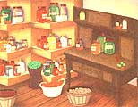
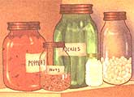
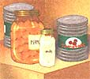

Issue # 163 - August/September 1997
How to live from a pantry, our three-month plan.
This is the age of supermarkets, 24-hour convenience stores, and 30-second solutions for just about every problem. What a contrast to the days, really not so long ago, when pioneers settled into homesteads a day's travel (or more) by horse from the nearest trading posts. A well-stocked pantry was a matter of survival then. Of course, the pantry's heritage goes back even further to the days before stores. as we know them even existed. The Egyptians, for instance, were masters at stocking a pantry with enough preserved food from the summer months to get them through the winter months. It might not be a bad piece of advice to emulate the lifestyles of the longest-lived empire in history.
The pantry is one of a few ideas we need to borrow from the past. No matter what you call it-pantry, Spence, storeroom, stillroom, larder, or as I knew it as a child, winter storage-storing food is a concept whose time has come again for my family. As a contractor, my income is neither steady nor predictable. Some months are fat, some lean. With our pantry we always know we can eat, and we have been able to cut out the quick (but economically deadly) trips to the convenience store. We save the cost of fuel and wear and tear on the car as well. Our pantry provides for our daily needs, and it is also a storage system capable of sustaining us for an extended period of time. Recently, for 11 months we lived using our pantry food storage system without outside assistance or supplies. During this period we found some minor miscalculations, none serious. In many ways as a family, we had a ball. We all worked and pulled together to meet our needs.
You may have your own reasons for stocking a pantry. Perhaps you choose to live in a remote area and you can't be running off to the store everyday, or even every week. Perhaps you just want to savor the flavors of your garden and have the liberty to prepare or purchase items as season, financial ability, or time allows. Whatever your reasons for starting your own storage system, here is a route to help you reach the goal of self-sufficiency. As you start the planning process, pretend you are living in a frontier or pioneer setting. How do you provide for your family's needs? You must get back to the basics of food storage, while gratefully accepting some help from today's technology.
First, you decide where your storage system stands now, if you have one. How long will your currently stored resources provide for your family's needs? What period of time do you what to prepare for? One month, three months, or one year? The Chinese have a saying: "A journey of a thousand miles starts with the first step." Where, how far, and how fast you journey is up to you. For the purposes of our discussion, our goal will be to prepare for three months. Three months is 13 weeks. You can make it shorter or longer; the method discussed here will still apply.
Obviously, your first question should be: How much and what should I store? I'd be happy to tell you what to store, but you may not like what I eat. In my family, at least four out of the five would rather starve than eat sauerkraut. A diet of hot dogs with pork and beans, or macaroni and cheese with peas and tuna in it may not appeal to you. This is a journey of self discovery. The good news is, you can and should tailor your plan to fit your specific needs and tastes. To determine what items or food dishes to include in your plan, write down your food favorites on three-by-five cards. Separate out main courses, vegetables, breads, desserts, and snacks, etc. Remember the K.I.S.S. theory (keep it simply scrumptious). Start with simple meals and build up from there. With your family, use the cards to make up seven breakfast, lunch, and dinner menus. That's 21 meals and snacks. Now repeat this process at least three more times. (You can repeat favorite menus as often as you like.) You should now have written menus for 28 days or four weeks or more. Don't forget beverages and condiments such as pickles, relish, and mustard. In my oldest son James's case it is barbecue sauce; he uses it on ...everything.
Use your weekly menu blocks that your family just made up to plan meals for the 13 weeks, or whatever length plan you choose. Because it is based on meals, this method of planning works with a family of one or 14. It works equally well if you use prepared foods, such as vegetables canned or home-processed from your garden. Creativity in your planning will give diversity in your plan. This is especially important when you plan for long-term storage.
The next destination en route to your goal is to assemble the recipes for those menu items you want to store. If you have not used a particular recipe before, now is the time to test it. For some items such as condiments, you'll have to estimate on your current usage. You can always adjust the amounts as needed. Now, onward toward your goal. Reduce these recipes to the items or ingredients needed to prepare them. This list of ingredients will start your "shopping list." To convert the ingredients to bulk amounts for purchase, consult the weights and measures chart in your cookbook or dictionary. The hardest items to convert are the herbs and seasonings, due to the small amounts and weights involved. Institutional or large-quantity cookbooks are another source for this information. (Check with your local library or school kitchen). There are several computer cookbook programs on the market, which can also aid you in this process. Most have recipe databases included and the ability to add your favorite recipes. Many have the ability to covert items to bulk amounts for purchase using the recipes you have selected.
A simple way to figure a use cycle of non-food items is to date the package when opened, and note the date when used up. A bar of soap may only last two weeks in your house. Thirteen weeks divided by two equals six and one half or seven bars of soap for three months. Let the kids help. By making a game of it, they will help you gather the usage information. Remember a sponge with a slit cut into its side (like a sandwich roll) is a great way to use the slivers of soap. Kids love the new bath toy. (Some adults will too!) This might be a good time to remind you that some paper products should be included in your storage plan such as toilet paper and feminine hygiene products.
With your "shopping list" now developed, check it against what you have on hand. You'll purchase or prepare those items still on the list. Buy dry goods in bulk and package them at home using the size container that fits your needs. Buy canned goods in case lots at their lowest per-unit cost. Now, instead of shopping at the store to replenish the kitchen cabinets for your day to day needs, you restock from your personal stores. By breaking ingredients down to basics, you can reduce the number of items you have to store. This will give you the greatest flexibility in food preparation. Example: Flour stored as a biscuit mix limits the way you can use it. Flour can be used in hundreds of ways, not to mention the one that follows the dreaded news, at nine in the evening, "Mommy I need two dozen cupcakes for the party at school:" The level to which you go back to basics is your choice. What are a little flour, sugar, and cupcake papers if you have planned correctly? As a gardener you may plant, let's say, green beans. No matter what the crop does, boom or bust, you know where you stand depending on your production. It doesn't matter what method of storage you use. Dry, can, or freeze your produce. When necessary, additional fresh or prepackaged items can be purchased to meet the requirements of your storage system.
Here's a true story that will help illustrate "homemade" savings. We make our own bread crumbs. Using odd pieces of bread, the bread that gets flattened in the freezer or goes stale (that fictional Mr. Nobody forgot to close the bag), avoids wasting resources. Our kids are happy to help when we make bread crumbs. They know when there are enough crumbs, there will be Salisbury steak to eat. (That is not the only thing we make with bread crumbs, but it is their favorite.) One day a neighbor asked to borrow two cups of bread crumbs, which we gladly provided. A week or so later, her son brought us a box of store-bought crumbs that was priced at $2.68. This morning we made six cups of crumbs, from rolls we paid 50 cents for. When reduced into crumbs they only take one-sixth the space. For additional savings, extend this idea to saving vegetable and meat trimmings in designated containers in the freezer for making homemade soup stock.
Getting back to basics and making things at home may require a small investment in some tools. If you remember Grandma's kitchen, she didn't have many specialized cooking tools to prepare the meals for her family. Most items she had did double or triple duty, and few were powered by anything except old-fashioned elbow grease. Start with the simple hand tools, and continue to build. Hand-powered tools work just fine. They also require a smaller investment to start. A grain mill is an exception to my hand-powered rule, along with an ice cream maker, a good standing mixer for making bread and cookies. Other necessities are good quality knives. A good knife is a sharp knife. A cheap dull knife is an accident waiting to happen. Try to buy commercial quality items. You may pay a little more to start with, but less over a lifetime.
Six-inch storage containers are an integral part of any storage system. They come in many sizes and shapes. This is one area you will need to experiment in to find what works best for you. We have always used mason jars. They are versatile and readily available in many sizes from half-pints to one-half-gallon. They can be used for dry or vacuum packing and home canning. There are even jars designed for freezing. Those items that need to be dry packed in larger quantities can be put up in #10 cans (a little less than a gallon). Once opened, the cans can serve as canisters with the use of a plastic lid. The largest containers we have used are five-gallon pails with airtight lids. My best friend Matthew and his wife, Debbie, use 32-gallon metal garbage cans for some of their bulk items. Whatever works best for you. By now you may think our house looks like the corner supermarket. No, more like an old-fashioned dry goods store from bygone days. Just kidding. We don't really have a pickle or molasses barrels. We have the pickles and molasses, just not in barrels. Once you've chosen your containers, there are several ways to prolong the shelf life of dry-good products dry packed at home. Oxygen absorber packets are easy to use. Just put them in the container and close the lid. Home vacuum packer sealers offer reusable plastic bags or an attachment that allows you to seal your mason jars using standard canning flats.
All foods do not have the same shelf life. Flour does not store as long as whole wheat. Rotation is necessary to keep your items at their peak food value and avoid spoilage. Don't panic. It's not a difficult process, but like a storage plan, it takes a little forethought. Use your stored foodstuffs based on the dates when put into storage, using the oldest items first. As you package those items at home you purchased in bulk, names and dates become critical. Trust me, playing "Guess what?" and "When did we do that?" is not fun. We purchase canned goods by the case from our local cannery. Their mislabeled and slightly dented cans are a real bargain (about 25 percent of what we would pay in the local supermarket). This was never a problem ...until we used our youngest son Charles's closet to store our unopened cases of canned goods. One day he and his friend used these cans to make buildings, and an excellent game of "Guess what?" resulted. (Note to reader: Fruit cocktail does not work well in the place of whole tomatoes.) Label both the long and short end of cases, and once you open a case empty it, so you avoid having three half empty boxes of the same item. This is a good exercise for the kids. Our middle son Ben, was happy to relabel our new stock of dried "potato flakes" after a year of friendly family kidding about his labels that read "Potatoe Flackes."
If your family is like ours, you may find that you will consume more of some stuff and less of other stuff than you had predicted. One big shock to us was the amount of beverages we drink. Our allowance for beverages had to be increased. We had figured on making one package of drink mix or one-half gallon per day. It uses one cup of sugar per package of drink mix That would require 365 packets a year and 182 pounds of sugar. What we really needed was one gallon a day, or 730 packets of drink mix and 365 pounds of sugar. We also found we used more powdered milk in baking as well. Keep notes and make corrections as you go. By increasing the scope of our pantry storage system, we have had to learn new skills for preparing food such as crepes, homemade pizza, and Chinese-style dishes like stir fry, soups, spring rolls, and wontons. As we make corrections to our pantry plan, our efficiency increases, we save more money, and have more fun. For the cost of a couple of take- out pizzas you can get what is needed to make pizza at home. Another benefit is that our two oldest boys have hosted many pizza parties for their friends. They have a great time making them "their way;" and it is much more economical than take out. Mom and Dad have also played "Burger Joint" short order chefs for our family and friends. We served up hot dogs, burgers, files, sodas, and shakes made-to-order with every item coming straight from the pantry.
Today. Decide how long you want to prepare for, then plan with your family what they like to eat and how often they want to eat it. Write down this information. Keep your menus simple to prepare and plan for at first. You can plan for salmon stuffed manicotti when you get your feet wet. Once under way, you will notice the game slowly changing from "Guess what?" to "What can we make at home for less money, and have fun doing it?" It's all a process of developing your shopping list. Check it against what you have on hand. Emergencies are occasions that no family needs to worry over, but every family needs to prepare for. And even if you never need to use your pantry for an extended period, you gain the peace of mind that you can. At the very least you will dramatically reduce your food costs in the process. All measures of economic good sense and family safety aside, planning and working for a common purpose will simply bring your family closer together. We'll take all of those opportunities we can get.
|
|
 |
 |
|
 |
|
|